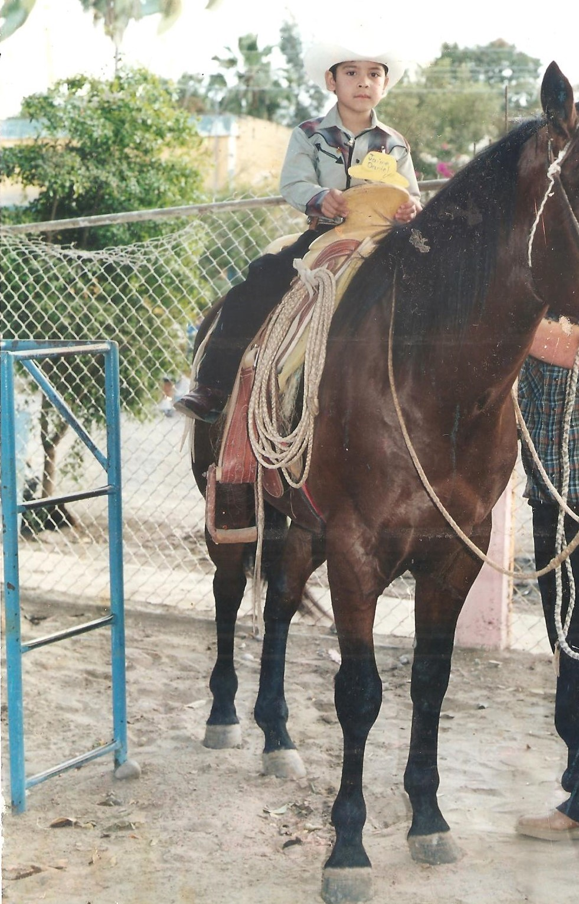

Hola mi nombre es Jaime Daniel Meyoy Barreras soy de Sinaloa y nací en los Mochis y tengo 21 años, mi mama se llama Ramona luz Barreras Urías y mi papa jaime meyoy padilla a mí me pusieron jaime por mi papa yo nací en el año 1995 en el mes de septiembre del día 18,cuando yo nací no teníamos casa, vivíamos con mis abuelo papas de mi mama, mi abuela se llama Guadalupe Urías león y mi abuelo pablo barreras murillo ellos ahorita ya están un poco mayor, yo vivía con ellos junto con mis papas y mi dos hermanas, una se llama Janeth Abigail meyoy barreras y la otra se llama maría de Lourdes, Janeth es la más grande que tiene 26 años y maría de Lourdes tiene 23 las dos ya están casadas y tengo 4 sobrinos 3 son mi hermana la mayor y 1 de maría. Desde que yo era niño era muy alegre me gustaba mucho jugar con carritos y aviones, dicen que me quería mucho mi abuelo papa de mi papa que eduwiges meyoy que le decían todos mis primos papa Vicky dicen que el me quería mucho que siempre me cargaba en los brazos y me hacía muchos cariños pero la verdad yo no me acuerdo estaba muy chiquito, yo no alcance a conocerlo solo lo eh visto en fotos y pues mi abuela de nombre Carmela padilla ella todavía vive.
A la edad de 5 años yo entre al kínder en el año 2000, de nombre Judit Gaxiola de Valdez que me quedaba cerquita de mi casa me gustaba ir mucho porque había muchos juegos recuerdo que había un puente y me gustaba mucho pasar por ahí, recuerdo que tenía muchos amigos, después que salí del kínder pase a la primaria que lleva por nombre justo sierra esa me quedaba aún más cerca que el kínder fue ahí donde curse los 6 años de primaria recuerdo que al salir de la primaria como viaje de graduación nos llevaron a la playa el maviri que yo nunca había visitado y que era algo nuevo para mí, después entre ala secundaria con nombre Ernesto García tuve suerte porque Ahome es un pueblo chico y me quedaba todo cerca fue ahí donde curse los tres años de secundaria sin tener ningún problema, luego entre a la prepa recuerdo que yo estaba muy preocupado porque me decían que ya le prepa no era la misma que la secundaria que ya era muy difícil y que le tenía que echar muchas ganas recuerdo que al momento de hacer mi examen para poder entrar a la prepa yo estaba muy nervioso, pero ya una vez que entre no se me hice muy difícil se me hace que es como todo si le echas ganas y pones atención todo es fácil, cursé los tres años en la prepa cobaes 03 que me quedaba aún más cerca que el kínder y la secundaria y aun así llegaba tarde al principio me decían que ya tenía que pensar que estudiar porque ya casi salía de la prepa recuerdo que no sabía muy bien que elegir por un momento yo pensé estudiar para veterinario pero me dijeron que solo había en Culiacán y pues la verdad me desanime porque no teníamos dinero para poder ir yo asta haya luego otra carrera que me llamaba la atención era odontología pero me dijeron que era muy cara asi que busque en la página del tecnológico de los Mochis las carreras que ofrecían y pues mire informática y me ilusiono mucho porque a mi desde siempre me ha llamado la atención las computadoras y todos los aparatos electrónicos la verdad que no tenía idea de que trataba la carrera pero entre porque pensé que tenía ver con todo lo que me gustaba y pues ahorita estoy cursando la universidad en el tecnológico nacional de los Mochis estoy en sexto semestre ya me falta muy poquito para salir
Y pues bueno esto es solo una parte de mi vida que aún falta mucho que contar pero la dejare hasta aquí porque sería muy largo y muy aburrido leerlo espero que haya sido de su agrado muchas gracias si llegaste a leer hasta aquí saludos 😄 